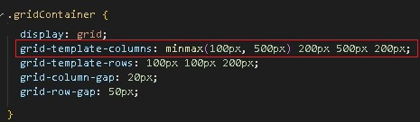

HTML

CSS

Делаем первую колонку отзывчивой,
чтобы размер колонки менялся от 100рх до 500рх
исползуем функцию minmax(100px, 500px)
передаем два аргумента:
минимальный размер колонки и максимальный.
Теперь от размера окна браузера - наша колонка
будет изменять размер колонки от 100рх до 500рх
чтобы размер колонки менялся от 100рх до 500рх
исползуем функцию minmax(100px, 500px)
передаем два аргумента:
минимальный размер колонки и максимальный.
Теперь от размера окна браузера - наша колонка
будет изменять размер колонки от 100рх до 500рх